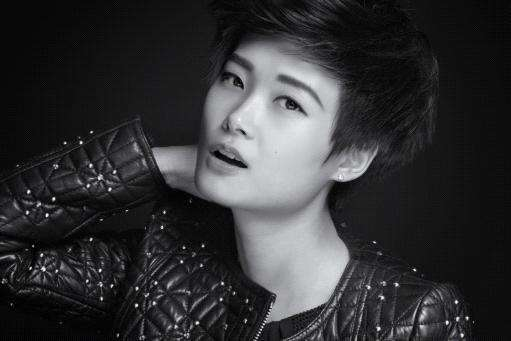
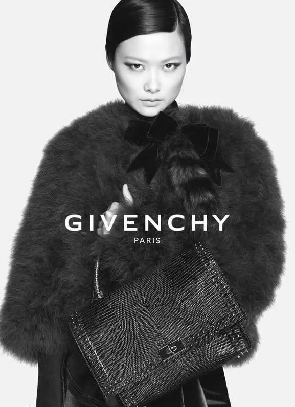
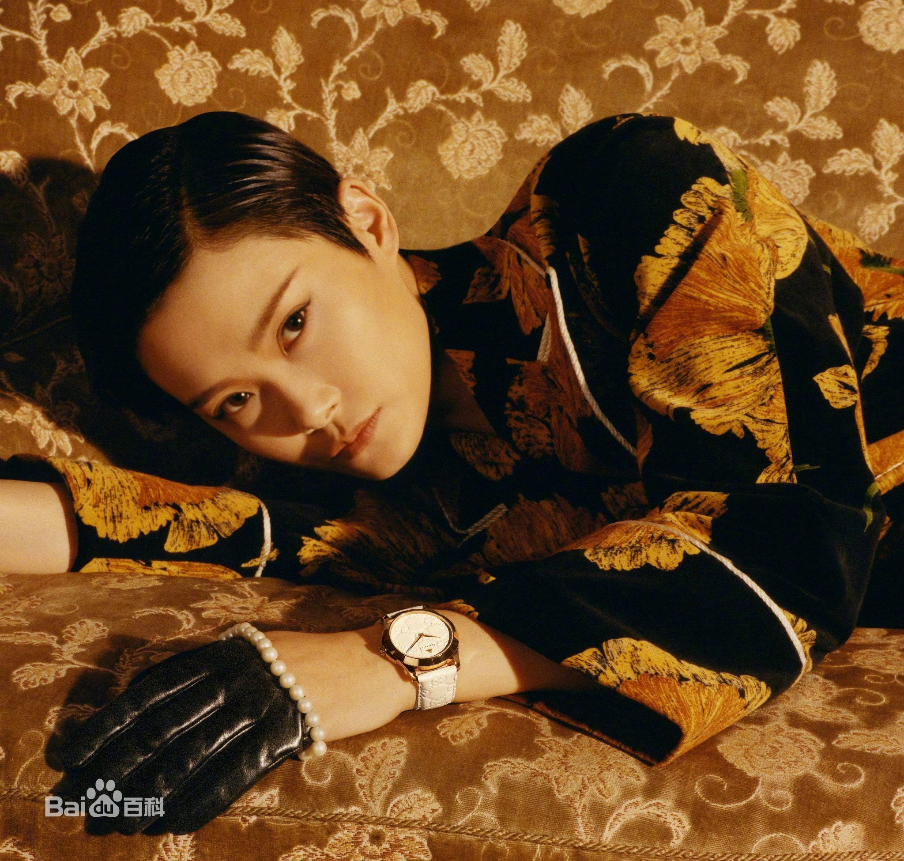
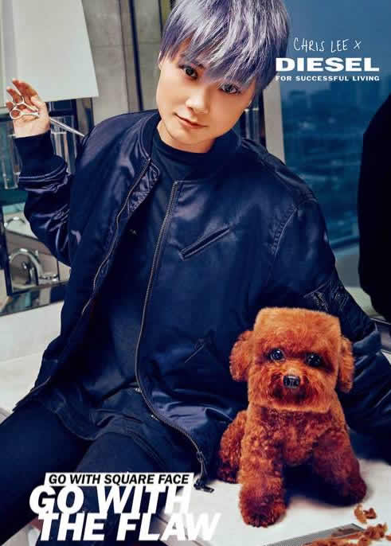
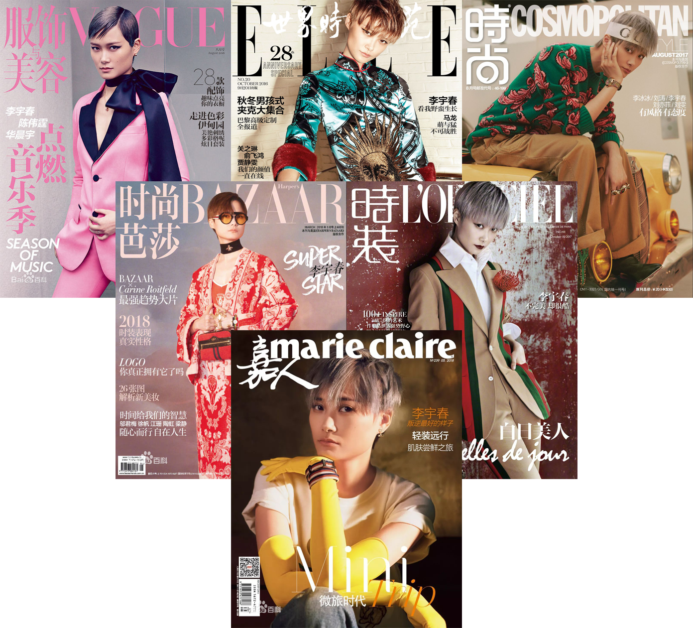

李宇春于2012年因其巡回演唱会而与时尚大师高缇耶先生相识，因此踏入时尚圈。2012年由高缇耶先生为其设计巡演战袍，同年宣布加入巴黎欧莱雅梦之队。2013年其品牌演唱会《WHY ME》服装由纪梵希在任设计师提卡多设计，2015年为其拍摄广告大片成为其一个亚洲代言人。2016年成为GUCCI品牌代言人。2012年后其演唱会服装均由国际设计师设计。截止2016年8月李宇春完成时尚杂志大满贯，是年纪最小的一个也是唯一一名歌手。
|  |
2012年李宇春在其《疯狂世界巡演》上宣布加入欧莱雅梦之队，开启了她的时尚之路。六年间，李宇春收到戛纳官方邀请以欧莱雅品牌代言人的身份六次踏上电影节红毯，更多的出现在国际舞台。2017年九月更是作为梦之队中国代表在巴黎香榭丽舍大街走秀。 |
|  |
2012-2013 湖南卫视跨年演唱会，李宇春身着特地从巴黎空运而来的Givenchy2012秋冬系列红色内面黑色皮革风衣零点登场，Givenchy也随后在其官方Facebook与官方微博发布了照片，同时宣布其为2012年下半年法国总部唯一同意赞助服装的亚洲艺人。2013年《WHY ME》演唱会更是由纪梵希设计总监里卡多为其设计服装。立里卡多称李宇春为"QUEEN L"。2015年李宇春为其拍摄广告大片成为首位亚洲代言人，并在其生日当天发布"WHY ME CHRIS LEE"定制鞋款。 |
|  |
李宇春与古驰的合作也早有渊源，2014年李宇春就受到GUCCI所在集团kring总裁的邀请出席中法建交50周年鸡尾酒会。2016年5月古驰宣布李宇春成为其腕表首饰类亚太地区品牌大使，同时释出广告大片，并全球投放。2017年初宣布其升级为古驰品牌大使，没有了地区及支线限制，同时释出新的广告大片。 |
|  |
2017年9月知名牛仔品牌DIESEL宣布李宇春成为其首位全球代言人。同时李宇春参与设计胶囊系列，一经发布便遭到疯抢，即刻售罄。 |
|  |
李宇春2012年接触时尚，至今已有六年时间。期间登上了许多次时尚杂志，特别是传说中的"五大"，2016年8月李宇春集齐五大杂志完成"满贯"。2013年更是登上了意大利版VOGUE并给出了10页的专题报道。 |